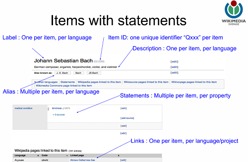
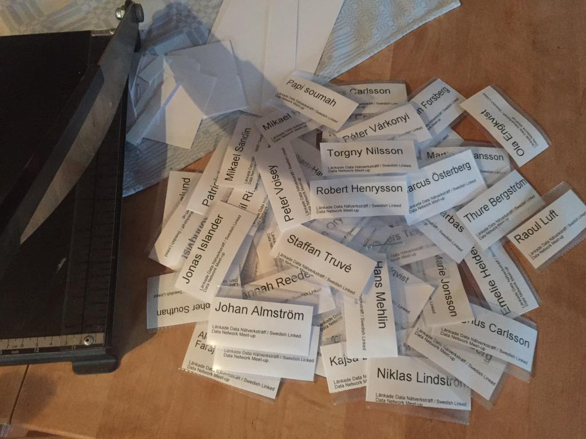
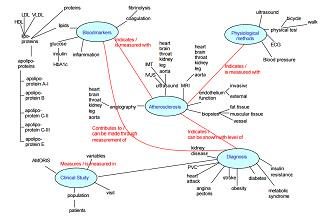
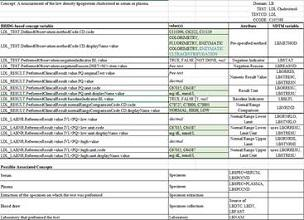

April 2015
RDF Shapes Questionnaire w3.org/2015/ShExpress… Use case: Transform/Validate eg MedDRA in RDF cc @MedDRAMSSO see also slideshare.net/jelabra/toward…
Looking for input from clinical trial data validation experts Ping @OpenCDISC @Medidata @iamnotthelotus @bioclinica twitter.com/philarcher1/st…
API delivering JSON from @Open_PHACTS dev.openphacts.org from the backend of linked data #lankadedata
Now time for my @AstraZenecaSE colleague Ola Engqvist to talk about @Open_PHACTS slideshare.net/mobile/open_ph… #lankadedata
KConnect | Search technologies for medical information kconnect.eu/join-our-journ… #LankadeData with @Findwise @ontotext
Talking about history #LankadeData I just realised it's almost exactly 15 years since I published my first RDF paper dl.acm.org/citation.cfm?i…
Linked Data Fragments highlighted by @philarcher1 in #LankadeData Checkout @RubenVerborgh's great work on this slideshare.net/RubenVerborgh/…
Checkout my blog on "CSV on the web for Clinical Trial Data" (metadata to go with your tabular datasets) kerfors.blogspot.se/2015/04/csvw-f… #LankadeData
"Developers want JSON", "Others want csv (intoExcel)", "I was hoping for OpenRefine on the web"- @philarcher1 #csvw w3.org/blog/data/2015…
Cute illustration of RDF Shapes w3.org/2014/data-shap… ("schema for RDF") in @philarcher1 #lankadedata presentation flickr.com/photos/kumarse…
Would be nice to test entryscape.com/?lang=en for metadata based on #schemaorg defined entities e.g. schema.org/MedicalTrial #opentrials
Guess what the @wikidata entities Q1 and Q42 identifies? wikidata.org/entity/Q1 and wikidata.org/entity/Q42 #lankadedata
Retweeting this from @philarcher1 as a follow up to @cdsouthan's question in our #LankadeData event twitter.com/philarcher1/st…
Items with statements in @wikidata from @Jan_Ainali presentation bit.ly/wikidatagbg fin our #LankadeData event

Problems with hangout/youtube #lankadedata, so here are the slides from @Jan_Ainali presentation bit.ly/wikidatagbg about @wikidata
Follow us #lankadedata event live from @Lindholmen We will also post the recordings of all presentations twitter.com/flandqvist/sta…
Looking forward to meet @philarcher1 F2F today and hear him speak to these w3.org/2015/Talks/042… #LankadeData twitter.com/philarcher1/st…
Final preparations for tomorrow's #LinkedData meetup at @Lindholmen eventbrite.com/e/lankade-data… Welcome

How about having #LinkedData principles applied for @SalesforceDevs apps e.g URIs, #jsonld, schema.org ? twitter.com/salesforcedevs…
Heading to @ituniv to meet @flandqvist for final preparations for tomorrow's #lankadedata meetup in Göteborg eventbrite.com/e/lankade-data…
Updated my #FollowFriday list with why follow I @danbri @hadleybeeman for professional awareness and interaction medium.com/@kerfors/my-fo…
Nice to see the slide on "RDF and the Future" about the Yosemite project in this #vitalis2015 slide deck in Swedish twitter.com/oskthu/status/…
Two great names as #FollowFriday #FF for this and last week: @hadleybeeman @danbri I'll update medium.com/@kerfors/my-fo… during the weekend
The closed CRL project was also based on #ISO11179, extended to be able to handle variances slideshare.net/mobile/kerfors… twitter.com/assero_uk/stat…
Nice. Also the RDF representation of CDISC standards is based on parts of #ISO11179 github.com/phuse-org/rdf.… twitter.com/assero_uk/stat…
Started my morning with porridge and updating my blog post from yesterday: #CSVW for Tabular Clinical Trial Data kerfors.blogspot.se/2015/04/csvw-f…
Less variance is helpful, but we need to cope with variances by making them explicit and take informera decisions. twitter.com/hconstandt/sta…
Kudos @danbri @ivan_herman @Gkellogg @edsu You triggered a blog: CSVW for Tabular Clinical Trial Data and Metadata kerfors.blogspot.se/2015/04/csvw-f…
@pdmetcalfe @hadleywickham Ugh, I wish I were a R guru like you and not just a ppt/doc/blog fool. See my blog post kerfors.blogspot.se/2015/04/csvw-f…
@cjdinger @LexJansen @SAS_Cares Thx. Would be great to see an example of this in response to my blog post kerfors.blogspot.se/2015/04/csvw-f…
New blog post: CSVW for Tabular Clinical Trial Data and Metadata kerfors.blogspot.se/2015/04/csvw-f… #csvw #linkeddata
.@SAS_Cares @LexJansen #csvw is not export of data, it's creating annotated data, see edsu.github.io/csvw-template/ and greggkellogg.net/2015/04/implem…
I do like @opentrials tagline "All the data, on all the trials, linked". See my recent blog kerfors.blogspot.se/2015/02/clinic… #opentrials #linkeddata
Reading @CDISC Dyslipidemia TAUG, revisiting our Topic Map Apolipoprotein Research (2002) citeseerx.ist.psu.edu/viewdoc/downlo…

For more infor about cool URIs see @wikidata's meta.wikimedia.org/wiki/Wikidata/… cc: @hildabast @NLM_SIS @US_FDA @dWiseTech
Thx @hildabast I'm reading ncbi.nlm.nih.gov/pmc/articles/P… @NLM_SIS @US_FDA @dWiseTech Even better with cool URIs like this clinicaltrials.gov/entity/NCT0109…
Persistent and resolveable http based URIs using NCT numbers would do the job. Ping @NLM_SIS @US_FDA #LinkedData twitter.com/dwisetech/stat…
How about a rcsvw R package similar to greggkellogg.net/2015/04/implem… ? Ping @hadleywickham @pdmetcalfe #rstat #csvw #semanticweb
"FDA exploring #SemanticWeb technologies for study information exchange. Further details to follow soon." fda.gov/ForIndustry/Da…
How about a @SASInstitute implementation of @w3c #CSVW for tabular data similar to this greggkellogg.net/2015/04/implem… Ping @LexJansen
I can see interesting opportunties in combining @CDISC Define.xml cdisc.org/define-xml and @w3c #CSVW Metadata w3.org/blog/data/2015…
Excellenta proposal from @philarcher1 Looking forward to met Phil at our #LinkedData meetup eventbrite.com/e/lankade-data… twitter.com/egonwillighage…
"#CSVW spec.: an informed process of CSVs into an annotated data model as basis of creating RDF or JSON" -@Gkellogg greggkellogg.net/2015/04/implem…
@johaneltes can you update @mikaelhuss @jessiet1023 @Sagebio @wilbanks on the status? The latest info I found is slideshare.net/johaneltes/201…
Sunny, but chilly, morning walking and listening to #snomed ct elearning module on licenses snomed.elearningserver.com - not that funny
Of interest for a Data Index of tabular data sets and also for "on demand" RDF representations. Ping @druau twitter.com/ivan_herman/st…
Of interest also for representing data standards such as @CDISC Ping @swhume @iamnotthelotus twitter.com/ivan_herman/st…
Accountable systems for #InfoAccountability by @djweitzner via @wilbanks privacyassociation.org/news/a/real-pr…
.@Geek_Nurse @jhalamka Oh, the joy for app developers if APIs delivered #LinkedData viva la URIs docs.google.com/document/d/1KP…
#EHR4CR webinar @DipakKalra: European Institute for Innovation through Health Data youtu.be/iLgoENGxIPk
Here we go: I've joined two Microsoft focused @edXOnline MOOCs: Office365 API edx.org/course/introdu… and Data Analysis (Max) @EX101x
MT @emilybache: There's this cool tech week happening in Göteborg in May gbgtechweek.com #gbgtechweek
In a #Docker meetup at @SpeedLedger to learn more about Docker as a potential TechTalk seminar topic meetu.ps/2H743t
Very nice to see Mats Sungren my colleague and @IMI_JU #EHR4CR project coordinator in my Twitter feed twitter.com/evaknordin/sta…
I've just edited @openstreetmap with the @wikidata entity Q no / URI for my hometown Kungälv openstreetmap.org/changeset/3016… HT @egonwillighagen
Nice to see RDF mentioned as an emerging data exchange standard for FDA's Janus CTR twitter.com/lexjansen/stat…
Also, business analysts, solution delivery architects / PMs need to get reqs for APIs in URS/RFIs not only for UXs twitter.com/coachlillie/st…
Also Business Analysts, Project Mgrs need to understand the importance of APIs in business reqs. not only UX twitter.com/marthaheller/s…
Thx @laurentlefort, final version jbiomedsem.com/content/6/1/16… will be of interest for @novastaylor @MarcJuAndersen in phusewiki.org/wiki/index.php…
.@Jan_Ainali ta gärna med en bunt till #LankadeData #OppnaData dagen i Göteborg 28 april eventbrite.com/e/lankade-data… twitter.com/jan_ainali/sta…
Late #FollowFriday #FF add to my 2015 list: @Felienne the week her MOOC @EX101x from @edXOnline starts medium.com/@kerfors/my-fo…
"[CDISC] Standards development is an eternally ongoing process." @CDISC Dyslipidemia TA User Guide cdisc.org/therapeutic
Interesting: @cdiscSHARE prototype metadata for Research Concepts in Dyslipidemia TA UserGuide cdisc.org/therapeutic

Going to the #Docker meetup 14 April in Gothenburgh. Looking forward to learn more about Docker tools meetu.ps/2H743t
Reading @CDISC's @transcelerate's #CDISC #Dyslipidemia TA User Guide ow.ly/KMYaM <- +1 for E2E view CDASH-SDTM - ADaM-CSR shell
Reading @CDISC's @transcelerate's #CDISC #Dyslipidemia TA User Guide ow.ly/KMYaM <- How about graphs instead of tabular dataset?
Reading @CDISC's @transcelerate's #CDISC #Dyslipidemia TA User Guide ow.ly/KMYaM <- -1 for having to dump down to tabular dataset
Reading @CDISC's @transcelerate's #CDISC #Dyslipidemia TA User Guide ow.ly/KMYaM <- +1 for medical/clinical context to data stds
"I find the fact that it "uses" schema.org + #JSONLD quite intriguing, and heartwarming" #LinkedData twitter.com/aaranged/statu…
My 35 years in ADB/IT fr DL/1 to iPad -> MT @pmarca: People really forget how awesomely powerful IBM was in the 1980s pic.twitter.com/qJkosmsCLs
Istf Sharepoint -> RT @kristiannorling: Hur HD och Sydsvenskan byggde nytt intranät på 48 timmars hackaton | @Fosseus fosseus.se/2015/04/hur-hd…
MT @wjarek: Update on the transition of @fbase and the new Google #KnowledgeGraph API plans plus.google.com/10993683690713…
Good Friday = Swedish public holiday. I've spent the day on Marstrand and @Strandverket See earlier#FollowFriday:s medium.com/@kerfors/my-fo…